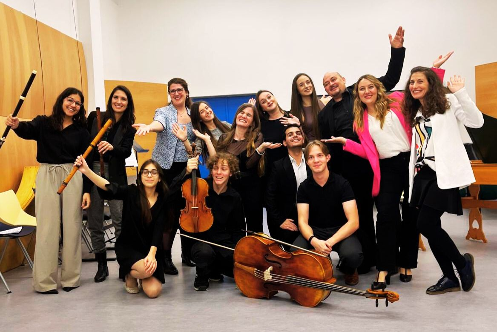

Mentori
Uz podršku


Učešće Rafaela Arjone Ruza u ovom programu realizuje se uz podršku Acción Cultural Española (AC/E), kroz Program za internacionalizaciju španske kulture (PICE), kao i uz podršku Ambasade Španije u Srbiji i AECID-a.
With the support of Acción Cultural Española (AC/E) through the Programme for the Internationalisation of Spanish Culture (PICE).